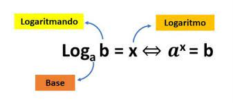

Logaritmos
Enquanto você lê, esculte essa música:
O logaritmo é uma operação matemática diretamente relacionada com as equações exponenciais. O valor do logaritmo corresponde ao expoente que se deve elevar uma determinada base, positiva e diferente de 1, para que o resultado seja igual a um número positivo b.

Exemplos de resolução de logaritmos:
| Propriedades Logaritmicas | ||
|---|---|---|
| 1)Logaritmo de um produto | log_a(b.c) = log_a b + log_a | O logaritmo de um produto pode ser separado na adição do logaritmo de mesma base de cada um dos fatores |
| 2)Logaritmo do quociente | log_a b/c = log_a b – log_a c | O logaritmo do quociente de dois números reais e positivos é igual à diferença entre os logaritmos desses números. |
| 3)Logaritmo de uma potência | log_b a^n = n⋅log_b a | Sempre que houver um expoente no logaritmando, o logaritmo de uma potência será igual à multiplicação desse expoente pelo logaritmo. |
| 4)Mudança de base | log_b a = log_n a/log_n b | Para aplicar as propriedades anteriores é necessário que todos os logaritmos da expressão estejam na mesma base. Do caso contrário, será necessário transformar todos para uma mesma base. |
Comentário
Não tive dificuldades em aprender esse conteúdo, é algo relativamente fácil e como a professora trouxe muitos exemplos e exercícios, onde fizemos a maioria sozinhos e depois foram corrigidos, isso facilitou o aprendizado. Além do mais, para entender os logaritmos é necessário dominar potências, o que também foi bem trabalhado nos outros trimestres.

Clique na seta para voltar ao topo da página